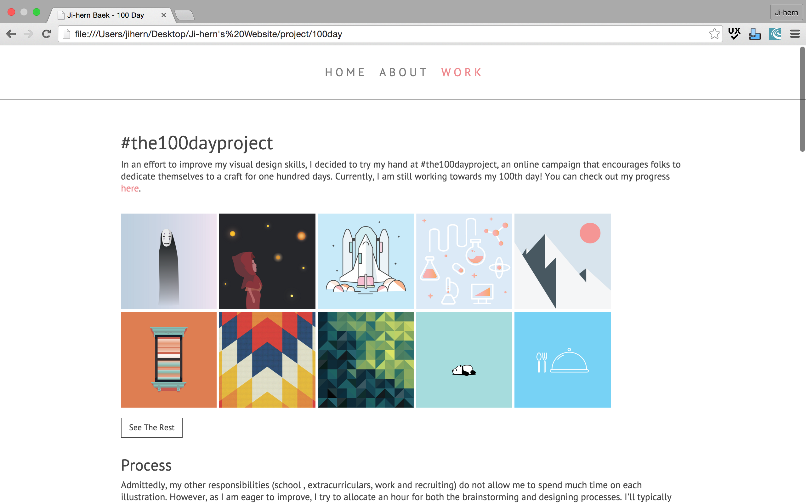

Personal Portfolio
Currently, you are looking at the third iteration of my portfolio.
Version 1
During this version, I spent a lot of time defining what I wanted to accomplish through my online portfolio - showcasing both my work and my personality. Though my final product was less than stellar, I was incredibly proud of myself for finishing this on my own. This iteration took about two weeks to finish.
See V1 Git


Version 2
Upon completing the V1 of my portfolio, I felt that I hadn't completely conveyed what I had set out to in V1. Admittedly, I got nervous looking at other designers' portfolios, noting that their portfolio works looked cleaner and more "them". Accordingly, I set out to make my portfolio to showcase myself a little more. I completed a set of mockups and even asked my roommate to take some nice, designer-y photos of myself. I completed this iteration in about a week, as I had a better understanding of file heirarchy and versatile code.
See V2 Git

Version 3
I finished V2 near the end of my fall 2015 semester. Upon completing it, I was incredibly proud and excited to have finished. I posted it on Facebook, reached out to fellow designers, and sought out feedback. I gained a lot of good notes and was excited to make those changes over winter break. However, once break hit, I realized that I had spent too much time focusing on trying to showcasing myself, which is important, but I didn't spend enough time showing my work. Though I'm embarrassed to admit it, it took me some time to realize that being a product designer is not solely about having a flashy portfolio rather it's about showing who you are and what you can do through your work. And at the end of the day, the flashy portfolio wasn't me.
See V3 Git